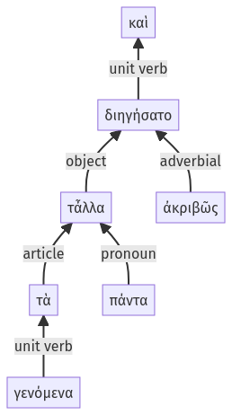

Lysias, Oration 1, 1.20.51-1.20.57a
1.19.16-1.19.38a | 1.20.58-1.21.8a
Sentence 52
1.20.51-1.20.57a
καὶ τἆλλα τὰ γενόμενα πάντα ἀκριβῶς διηγήσατο.
1 τἆλλα τὰ
2 γενόμενα
1 πάντα ἀκριβῶς διηγήσατο
καὶ τἆλλα τὰ γενόμενα πάντα ἀκριβῶς διηγήσατο.
Highlighting:
- connecting words
- unit verb
- subject
- object
Color code:
- independent clause (level 1, transitive verb)
- attributive participle (level 2, intransitive verb)
